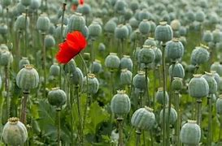

Basonym of Drug
Ahiphena
Main Synonym
- Ahiphen
- Ahiphen Kshupa
- Aafuk
- Chosa
- Khastila
- Khasakhas
- Khasaphala
- Khasabijam
- Phaniphena
- Saphenaka
Regional Name
- Bengali: Aaphi, Aphim, Pasto, Past, Pastodheri
- English: Opium poppy, Poppy capsule, Poppy heads, Peon poppy, White poppy seed
- Gujarati: Aphina, Apphou, Khuskhus, Khaskhas na doda, Posta
- Hindi: Afim, Dukpunj, Khaskhas, Kash, Posta, Poste ke beej, Posta dana
- Kashmiri: Aaphin, Aphen
- Kannada: Afim, Aphen, Biligasgase, Gasagase, Kasakase, Khasakhasi
- Malayalam: Afium, Avin, Khashakhasha, Karappu, Kasakasa
- Marathi: Aphu, Aphin, Apphou, Khaskhasiye vond, Khaskhas, Posta
- Punjabi: Afim, Doda, Khashkhash, Kaishkhas, Post
- Tamil: Abhini, Gashgashatol, Gashagasha, Kasokasa, Khasa, Pothakkai, Postakatol
- Telugu: Abhini, Gasugasala, Gasalu, Nallamanthu, Nallamandu, Posta-katol
- Urdu: Khaskhashsufaid
Botanical Name
Papaver somniferum
Family
Papaveraceae
Classification (Gana)
- As per Acharya Charaka: No reference
- As per Acharya Sushruta: No reference
- As per Acharya Vagbhatta: No reference
- As Per Bhavmishra: Haritkyadi varga
External Morphology
An erect rarely branched, annual herb, 60-120 cm in height.
Useful Parts
- Seeds
- Seed oil
- Unripe capsules
- Flowers
- Exudate from fruit
- Latex
Important Phytoconstituent
- Morphine
- Apomorphine
- Codeine
- Narcotine
- Papaverene
- Pseudo morphine
Rasa Panchak
- Rasa: Tikta, Kashaya
- Guna: Laghu, Ruksha, Suksma, Vyavayi, Vikashi
- Virya: Ushna
- Vipaka: Katu
- Prabhav: Madak
Action
Balya (Strengthening), Grahi (Absorbent), Vrishya (Aphrodisiac), Nidrajanan (Sedative), Swashar (Good for respiratory disorders)
Therapeutic Indication
- Apsmara (Epilepsy)
- Atisaar (Diarrhea)
- Sperm problems
- Anidra (Insomnia)
Therapeutic Uses
- The seeds pounded with milk & pasted help to destroy dandruff.
- The seeds are used as a general tonic in the form of various recipes.
Dose
- Exudate: 30 to 125 mg
- Khas khas: 1 to 3 gm
- Fatal dose: Opium: 2 gm
- Morphine: 0.2 gm
- Codeine: 0.5 gm
Formulations
- Ahiphenasav
- Astakshari Gutika
- Bhrihadgangadhara Churna
- Dugdha Vati
- Kamesvara Modaka
- Karpura Ras
- Mahavataraj Rasa
- Nidrodaya Rasa
- Nidrodaya Vati
- Swalpa Grahani Kapat Rasa
- Vedanantaka Vati
- Yavanyadi Kvatha
Adverse Effect
Its overdose causes drowsiness, sleep, respiratory arrest, depression, and even death.
Remedial Measure
- Stomach wash
- Emesis
- Use of antidotes like ghee, tobacco, etc.
- Cardiac stimulant like kasturi
Contraindications
- Children
- Kidney disease
- Depression-like mental disorders